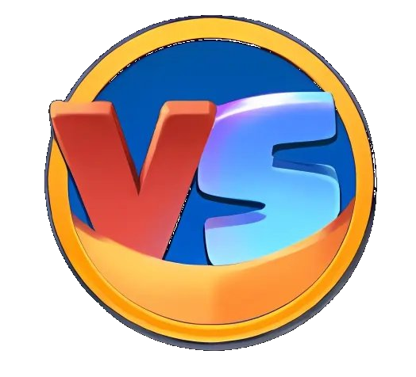
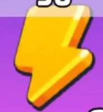
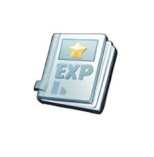
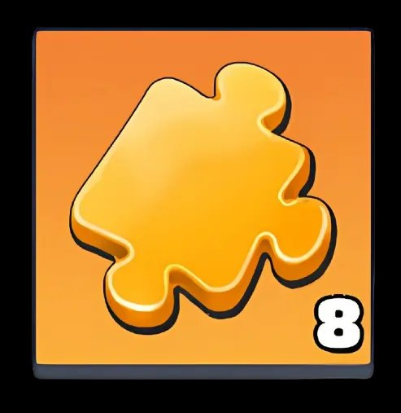

[NWH] Night Watch

Haftalık İttifak VS Savaşı Planı
Last War: Survival — VS Savaşını Kazanmak İçin Kapsamlı Kılavuz
🏆 Her zaman en yüksek öncelik: İttifak VS Savaşını kazanmak — Silahlanma Yarışı sadece ek bir kazançtır!
🔑 Sembol Kılavuzu
Silahlanma Yarışı ile senkronizasyon
Radar görevleri (sadece Pazartesi/Çarşamba/Cuma)
3 gün tekrarlanır
** 2 gün tekrarlanır
⚔️ İttifak VS Savaşı Nedir?
İttifak VS Savaşı, ittifakınızın başka bir ittifaka karşı çeşitli günlük zorluklarla yarıştığı 6 gün süren bir etkinliktir. Her gün farklı bir eksene odaklanır ve her üye günlük görevleri tamamlayarak puan kazanır. En çok puanı toplayan ittifak günü kazanır, en çok günü kazanan ise haftayı kazanır. Bireysel performansınıza ve ittifakınızın performansına göre günlük ve haftalık ödüller alırsınız.
🔑 Başarının Anahtarı: Kazanmak sadece güce bağlı değildir — akıllı planlama, doğru zamanlama ve ittifak üyeleri arasındaki koordinasyona bağlıdır. Her gün üssünüzün ve gelişiminizin farklı bir yönüne odaklanır, bu yüzden ne yapacağınızı ve ne zaman yapacağınızı bilin.
📌 Hızlı Özet
☀️ Pazar
Hazırlık
Kaynak toplama + radar ve parça biriktirme
🌙 Pazartesi
Aktivite
Radar + Hayatiyet + EXP + Drone
⚡ Salı
İnşa
İnşaat + turuncu kamyonlar + askere alma
🔬 Çarşamba
Teknoloji
Araştırma + Cesaret Madalyaları + drone sandıkları
🦸 Perşembe
Kahramanlar
Askere alma + EXP + Parça + Madalyalar
🔥 Cuma
Seferberlik
Birlikler + Araştırma + İnşaat + Radar
💥 Cumartesi
PvP
Savaş + kamyonlar + gizli görevler
🍖
Pazar gecesi haritadan yiyecek, çelik ve para toplamaya başlayın — böylece birlikleriniz Pazartesi günü VS Savaşı başladığında geri dönüp puanlarınıza sayılsın
📡
Radar görevlerini biriktirin — şimdi tüketmeyin, Pazartesi günü ihtiyacınız olacak
🚫
Hiçbir şey harcamayın — haftanın günlerinde çok fazla harcama olacak, tüm kaynaklarınızı saklayın
⚠️ Unutmayın: Radar görevlerini tüketmeyin — Pazartesi için saklayın. Ayrıca enerjinizin tümünü boşaltmayın, VS Savaşı başladığında tam Hayatiyet ile başlayın (40+40+120=200)
🟡 UR Parçalarını saklayın
🔴 Perşembe'den önce açmayın
🟡 Radar görevlerini saklayın
🟢 Geceleyin haritadan kaynak toplayın
🔴 Bugün kaynaklarınızı harcamayın
İlk gün sürekli aktivite ve işleri hareket halinde tutmakla ilgilidir. Odak noktası enerji tüketmek, radar görevlerini tamamlamak ve dronunuzu geliştirmektir. Pazar günü yapılan iyi bir hazırlık, bu günün başarısının anahtarıdır.
📡
Radar *** Radar görevlerini tamamlama
Hedef 80 görev — Pazar'dan biriktirdiniz, şimdi tüketme zamanı

Hayatiyet (Enerji) tüketimi
Zombi saldırılarında, baskınlarda veya ittifak görevlerinde kullanın
✈️
Drone eğitim verisi + Drone Parçaları
Drone yedek parçalarını biriktirin — bu gün için ihtiyacınız olacak

** Kahraman EXP puanlarını tüketme
Ana kahramanlarınızın seviyesini yükseltin
🍖
Haritadan yiyecek, çelik ve para toplama — gün boyunca
Pazar gecesi başladığınızın devamı — Pazartesi günü boyunca birliklerinizi sürekli toplamaya gönderin
⚡ Bir taşla iki kuş vurun — Silahlanma Yarışı
Silahlanma Yarışı aşaması «Drone Güçlendirme» olduğunda — Savaş Verisi ve Hayatiyetinizi aynı anda tüketerek çift puan kazanın
Aşama «Kahraman İlerlemesi» olduğunda — bu zaman aralığında kahramanlarınızın EXP'sini tüketin
İkinci gün odağınızı üs geliştirmeye çevirir. Teknoloji Merkezleri, Kışlalar ve hastaneler gibi önemli binaları yükseltmek, bu etkinliğin ötesinde size uzun vadeli bir avantaj sağlayacaktır. Hızlandırıcılarınızı rastgele kullanmak yerine, gerçek bir fark yaratan şeylere odaklanın.
🏙️
*** İnşaatı hızlandırma
İnşaat hızlandırıcılarını kullanın ve binaların yapımını tamamlayın — puanlar inşaat tamamlandığında sayılır
🏗️
** Bina savaş gücünü artırma
Üs gücünü artırmak için binaların seviyesini yükseltin
🚛
UR Turuncu kamyon gönderme
Hafta boyunca kamyon yenileme biletlerini toplayın — Salı ve Cumartesi günleri ihtiyacınız olacak
🎯
Efsanevi (turuncu) gizli görevleri gerçekleştirme
Hafta boyunca gizli görev yenileme biletlerini toplayın — Salı ve Cumartesi günleri ihtiyacınız olacak
🎟️
Hayatta kalanları askere alma
Hafta boyunca biriktirdiğiniz tüm askere alma biletlerini kullanın
⚡ Bir taşla iki kuş vurun — Silahlanma Yarışı
Silahlanma Yarışı aşaması «Şehir İnşaatı» ise — VS Savaşı ve Silahlanma Yarışı puanlarını birlikte kazanmak için inşaat hızlandırıcılarını kullanın ve binaların seviyesini aynı anda yükseltin
⚠️ Radar görevlerini tüketmeyin — Çarşamba günü ihtiyacınız olacak
Üçüncü gün, araştırma laboratuvarında akıllı kararlar almakla ilgilidir. Bu, üssünüzü güçlendiren teknolojilere yatırım yapma fırsatınızdır. Özellikle İttifak VS Savaşı, şehirler arası kamyonlar ve Özel Kuvvetler bölümlerinde Cesaret Madalyaları kullanan araştırmalara odaklanın — bunlar her zorlukta gücünüzü artıran uzun vadeli yükseltmelerdir.
📡
Radar *** Radar görevlerini tamamlama
Hedef 80 görev — Salı'dan 40 biriktirilmiş + Çarşamba'dan 40 = 80 görev hazır!
🔬
*** Teknoloji araştırmasını hızlandırma
Araştırma hızlandırıcılarını kullanın ve bekleyen araştırmaları tamamlayın
⚗️
** Teknoloji savaş gücünü artırma
Teknoloji gücünü artırmak için araştırmaların seviyesini yükseltin
🏅
Cesaret Madalyalarını tüketme — Özel Kuvvetler
Teknoloji Merkezi'ndeki İttifak VS Savaşı araştırmalarında Cesaret Madalyalarını kullanın
🚁
Drone parça sandıklarını açma (Seviye 1→7)
⚠️ Bu sandıkları hafta boyunca toplayın — bugün onları açmanın tek zamanıdır
✈️
Drone parçalarını yükseltme
Drone sayfasındaki parçalar bölümünden parçaları birleştirin
⚡ Bir taşla iki kuş vurun — Silahlanma Yarışı
Aşama «Teknolojik Araştırma» ise — araştırma hızlandırıcılarını kullanın ve aynı anda teknoloji gücünüzü artırın
Aşama «Drone Güçlendirme» ise — drone parça sandıklarını açın ve Savaş Verisi kullanın
Dördüncü gün, kahraman gelişimine odaklanır ve malzemelerinizi biriktirdiyseniz en ödüllendirici günlerden biridir. Biriktirdiğiniz tüm EXP, parçalar ve Yetenek Madalyaları bir araya geldiğinde takımınızı bir sonraki seviyeye taşır. Ana kahramanlarınızı geliştirmeye odaklanın, bu oyunun her alanında gücünüzü artıracaktır.
🎟️
Kahramanları askere alma
Hafta boyunca askere alma biletlerini toplayın — bugün hepsini kullanma zamanı
Kahraman EXP puanlarını tüketme
Ana kahramanlarınızın seviyesini yükseltin

Kahraman parçalarını tüketme UR SSR SR
Hafta boyunca parçaları toplayın — bugün hepsini kullanma zamanı
Yetenek Madalyalarını tüketme
Hafta boyunca madalyaları toplayın — bugün hepsini kullanma zamanı
⚡ Bir taşla iki kuş vurun — Silahlanma Yarışı
Aşama «Kahraman İlerlemesi» ise — VS Savaşı ve Silahlanma Yarışı puanlarını birlikte kazanmak için kahraman EXP'sini, parçalarını ve askere alma biletlerini aynı anda tüketin
⚠️ Radar görevlerini tüketmeyin — Cuma günü ihtiyacınız olacak
Haftanın bu aşamasında, tüm gücünüzü ortaya koyma zamanı geldi. Beşinci gün, üssünüzün, teknolojinizin ve askerlerinizin birden fazla sisteminin bir araya geldiği gündür. Yoğun bir gündür, ancak hafta boyunca yapılan iyi bir hazırlığın size büyük bir avantaj sağladığı gündür de.
📡
Radar *** Radar görevlerini tamamlama
Hedef 80 görev — Perşembe sabahından radar görevlerini biriktirmiş olmalısınız
🏙️
*** İnşaatı hızlandırma
İnşaat hızlandırıcılarını kullanın ve yapımı tamamlayın
🏗️
** Bina savaş gücünü artırma
Üs gücünü artırmak için binaların seviyesini yükseltin
⚔️
** Eğitimi hızlandırma + asker eğitimi
Birliklerinizi eğitin ve seviyelerini yükseltin — 1. seviyeden 10. seviyeye
🔬
*** Teknoloji araştırmasını hızlandırma
Araştırma hızlandırıcılarını kullanın ve bekleyen araştırmaları tamamlayın
⚗️
Teknoloji savaş gücünü artırma
Teknoloji gücünü artırmak için araştırmaların seviyesini yükseltin
⚡ Bir taşla iki kuş vurun — Silahlanma Yarışı
Aşama «Şehir İnşaatı» ise — aynı anda inşaat hızlandırıcılarını kullanın
Aşama «Teknolojik Araştırma» ise — aynı anda araştırma hızlandırıcılarını kullanın
Aşama «Birlik Gelişimi» ise — aynı anda eğitim hızlandırıcılarını kullanın
⚠️ Uyumadan önce koruma kalkanını etkinleştirin — rakip ittifakın sizin üzerinizden puan kazanmaması için
Düşman Yok Edici gününe hoş geldiniz! Bu, düşman askerlerini öldürmenin size büyük puanlar kazandırdığı PvP savaş günüdür. Savaşamıyorsanız, gereksiz kayıpları önlemek için kalkan şarttır. İyi planlayan biri için, bu kaotik gün haftanın en değerli günü haline gelir.
🚛
UR Turuncu kamyon gönderme
Hafta boyunca kamyon yenileme biletlerini toplayın — Salı ve Cumartesi günleri ihtiyacınız olacak
🎯
Efsanevi (turuncu) gizli görevleri gerçekleştirme
Hafta boyunca gizli görev yenileme biletlerini toplayın — Salı ve Cumartesi günleri ihtiyacınız olacak
🏙️
*** İnşaatı hızlandırma
İnşaat hızlandırıcılarını kullanın ve yapımı tamamlayın
⚔️
** Eğitimi hızlandırma
Birliklerinizi eğitin ve seviyelerini yükseltin
🔬
*** Teknoloji araştırmasını hızlandırma
Araştırma hızlandırıcılarını kullanın ve bekleyen araştırmaları tamamlayın
➕
Tedaviyi hızlandırma
Hastanelerde askerleri tedavi etmek için kullanılır
🗡️
Düşman ittifakının askerlerini öldürme
Rakip ittifakın kalesine saldırın — haritada kırmızı balonla gösterilir. Birliğin seviyesi ne kadar yüksekse puan da o kadar artar
⚔️
Diğer ittifakların askerlerini öldürme
Diğer ittifakların kalelerine saldırın — haritada beyaz balonla gösterilir
💀
Kendi askerlerinizin ölümü
Askerlerinizi kaybetmek bile size puan kazandırır — savaşmayı planlamıyorsanız kalkanı etkinleştirin
⚡ Bir taşla iki kuş vurun — Silahlanma Yarışı
Aşama «Şehir İnşaatı» ise — aynı anda inşaat hızlandırıcılarını kullanın
Aşama «Birlik Gelişimi» ise — aynı anda eğitim ve tedavi hızlandırıcılarını kullanın
Aşama «Teknolojik Araştırma» ise — aynı anda araştırma hızlandırıcılarını kullanın
⚠️ Akşam radar görevlerini tüketmeyin — gelecek Pazartesi günü ihtiyacınız olacak
❌ Kaçınılması Gereken Yaygın Hatalar
❌
UR Parçalarını Perşembe'den önce açmak — doğru an için saklayın
❌
Radar görevlerini kendi günleri (Pazartesi/Çarşamba/Cuma) dışında tüketmek
❌
Cesaret Madalyalarını İttifak VS Savaşı araştırmasına odaklanmak yerine rastgele harcamak
❌
Cumartesi günü uyumadan önce kalkanı etkinleştirmeyi unutmak
🏅 İttifak VS Savaşı Ödülleri
🥇 Günlük Sıralama Ödülleri
Günlük bireysel puanlarda ilk 30 oyuncu arasına girerseniz, ek özel ödüller alırsınız.
📦 Günlük Seviye Ödülleri
VS Savaşına katıldığınız her gün, kazanıp kazanmadığınıza bakılmaksızın bir ödül paketi alırsınız — tek yapmanız gereken günlük görevleri tamamlamaktır. Hafta sonunda ittifakınız, savaşın sonucuna göre ek ödüller alır.
🏆 Lig Sonuçlandırma Ödülleri
VS Savaşı liginin sonunda, ittifakınızın en az 6,000,000 puan toplaması gerekir. Alacağınız ödüller, etkinlikteki ittifak seviyenize (gümüş, altın veya elmas) büyük ölçüde bağlıdır.
🎯 Sonuç
İttifak VS Savaşı sadece kimin daha güçlü olduğuyla ilgili değildir — daha akıllıca planlayan, zamanlamayı daha iyi yapan ve takımıyla uyumlu bir birim olarak çalışanla ilgilidir. Her gün üssünüzün ve gelişiminizin farklı bir yönüne odaklanır. Ne yapacağınızı, ne zaman yapacağınızı ve her kaynaktan nasıl en iyi şekilde yararlanacağınızı bilin.
Eylemlerinizi Silahlanma Yarışı ile senkronize edin, kaynaklar, inşaat/araştırma/eğitim hızlandırıcıları ve Cesaret Madalyaları gibi öğeleri biriktirin ve en etkili yükseltmelere odaklanın. İttifak VS Savaşı ödülleri için planlama, katılımın kendisi kadar önemlidir — planlayın, koordine edin ve haftayı güçlü bir şekilde kapatın! 🏆
❓ Sıkça Sorulan Sorular
UR Parçalarını ne zaman açmalıyım?
➡️ Kahraman Günü (Train Heroes) — UR kahraman parçalarını açıp kullanmak için en uygun gün budur.
Hızlandırıcıları ne zaman kullanmalıyım?
➡️ Türüne göre, uygun günde: inşaat hızlandırıcıları Genişleme Günü'nde, araştırma hızlandırıcıları Bilim Günü'nde, eğitim hızlandırıcıları Kahraman Günü'nde.
Radar görevlerini saklamalı mıyım?
➡️ Evet, mümkün olan en fazla puanı almak için radar günlerinden (Pazartesi, Çarşamba, Cuma) önce onları saklayın.
🔝